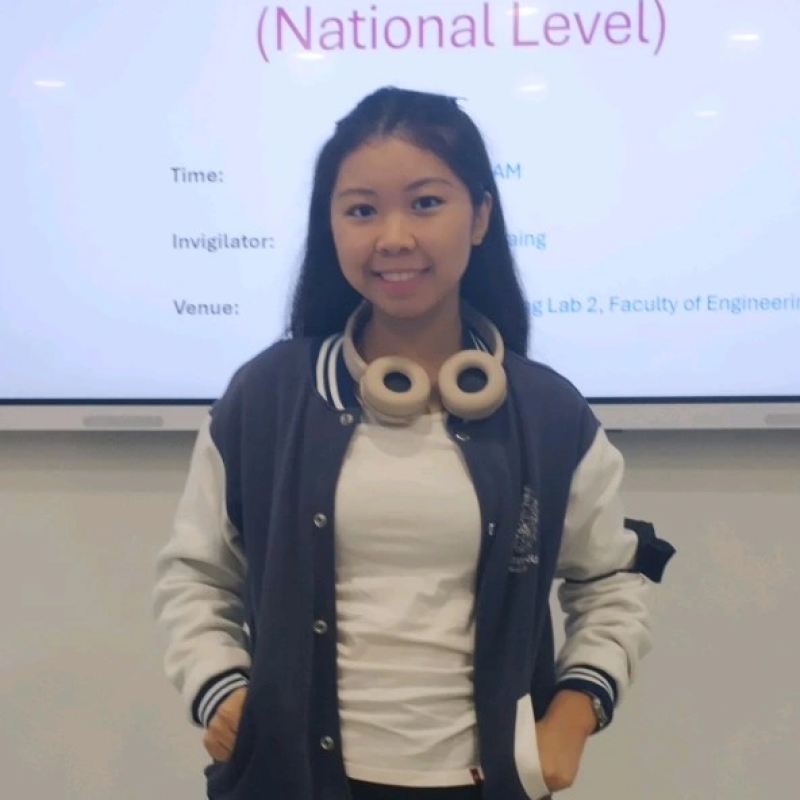
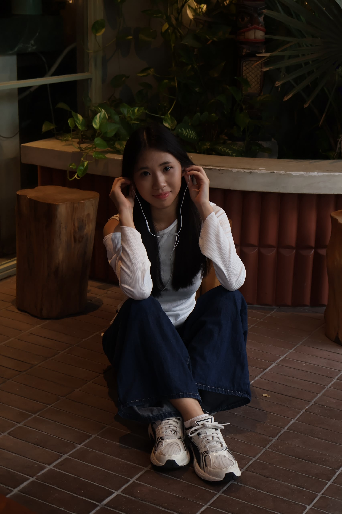

Our people & our pups
Meet the Team
Every cup is poured by someone who loves dogs and every table is watched over by our resident regulars.
The people
Human Staff
Click on to explore our role, contribution and portfolio.

Gan Jayci Founder & Head BaristaOpened Pawfee Café in 2023 and created a welcoming space where pet lovers and their dogs connect over premium experiences.
View Portfolio Hor Jian Jia
Café Manager
Hor Jian Jia
Café Manager
Runs the daily floor operations, staff schedules and supplier relationships. Keeps the café running smoothly on the busiest weekends.
View PortfolioCraft delicious, dog-safe custom treats and beautiful human pastries that create unforgettable, tail-wagging moments for pets and their owners alike.
View Portfolio
Ng Xiao Yan Dog Care SpecialistGreets every regular dog by name, manages playtime in the courtyard and keeps an eye out for any pup that needs a little extra attention.
View PortfolioThe regulars
Resident Dogs
Visit us to meet our cute resident dog.